Indian Folk Art
Archana
Pattachitra · Kalamkari · Madhubani · Gond
Pattachitra
Rooted in the classical Pattachitra tradition of Odisha, these works celebrate intricate craftsmanship, narrative compositions, and devotional ornament — mythology given form through fine linework and layered decorative motifs. Each piece aims to preserve the meditative spirit of an ancient tradition while feeling timeless and at home in modern spaces.


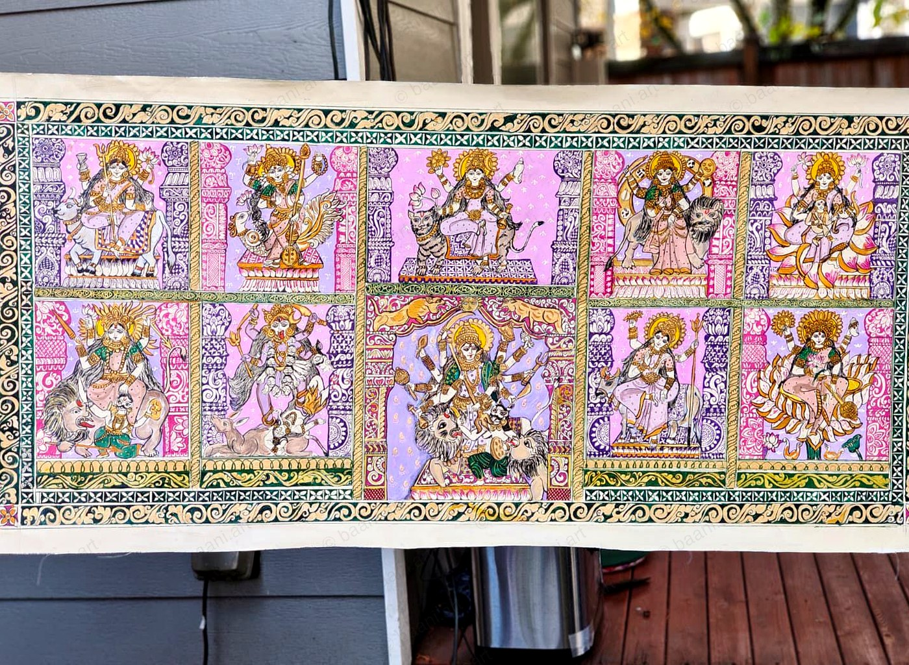
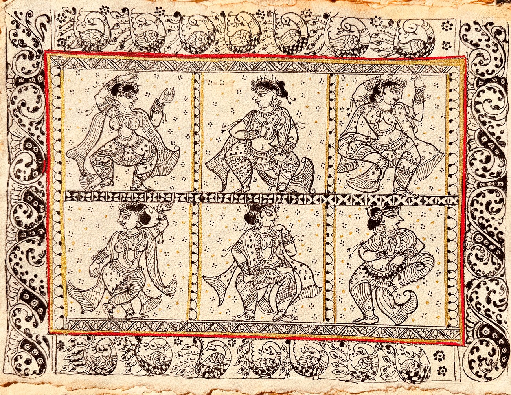
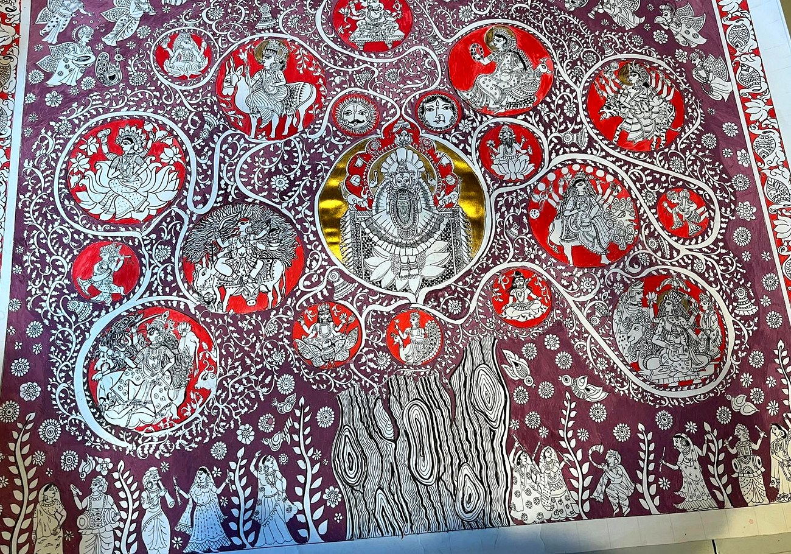
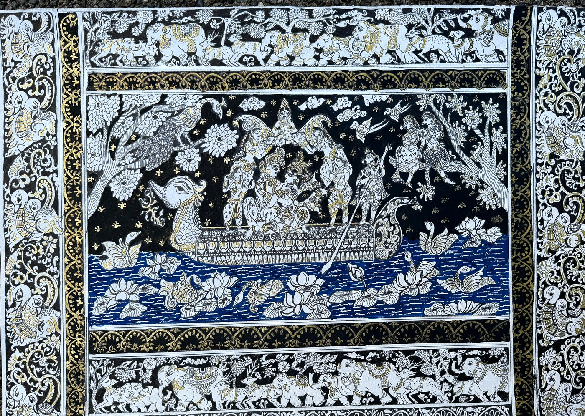
Kalighat
Rooted in the 19th-century Kalighat painting tradition of Bengal, these works celebrate the genre's fluid brushwork, expressive figures, and commentary on devotion and domestic life. The Bibi & Babu series — one of Kalighat's most beloved themes — reinterprets modern relationships and shared moments through bold form, rhythmic drapery, and the folk elegance that makes this tradition so enduring.


Kalamkari

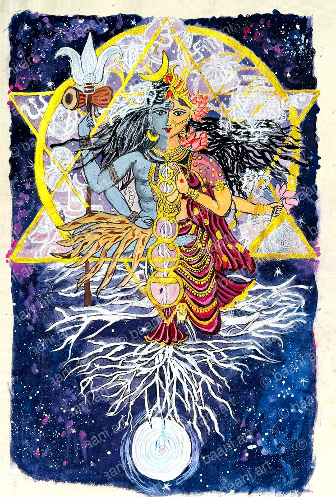
Madhubani · Mata ni Pachadi
Two devotional folk traditions, one devoted practice. Madhubani carries sacred geometry and mythological narrative from Bihar's Mithila walls — the Khobar, a bridal ritual diagram, its most intimate expression. Mata ni Pachadi, Gujarat's tradition of cloth painted in offering to the mother goddess, transforms devotion into ceremonial pattern, dense with colour and life. In both, line becomes prayer.
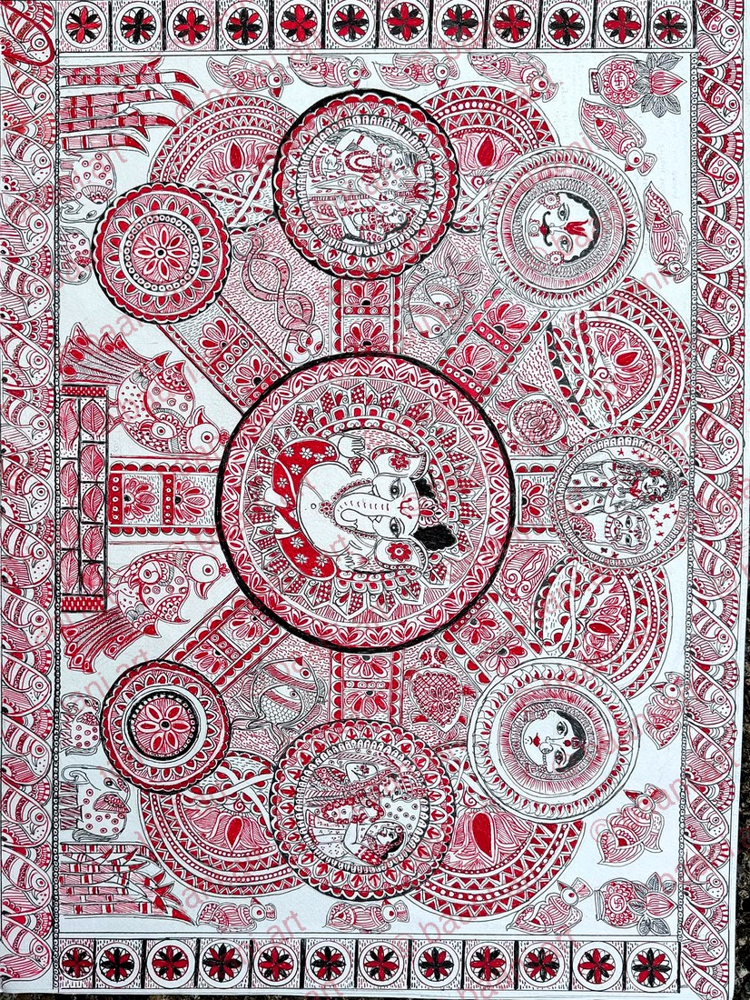
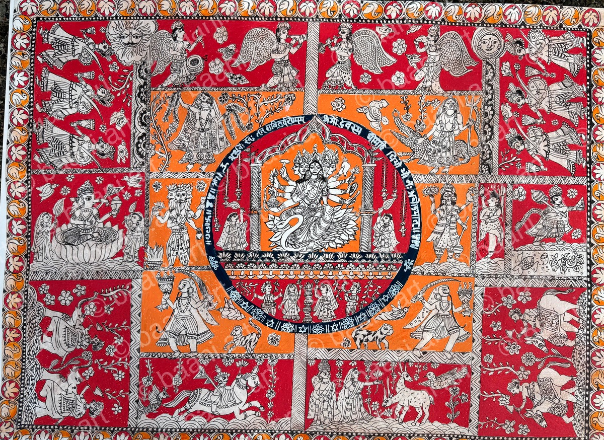
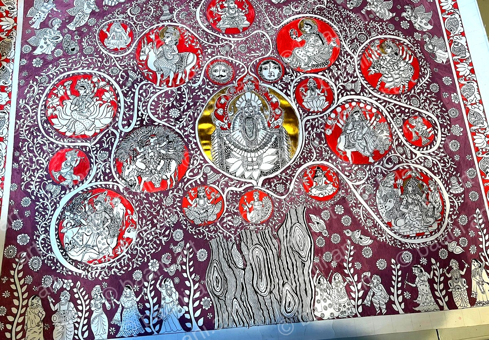
Phad · Gond · Bengal Pattachitra
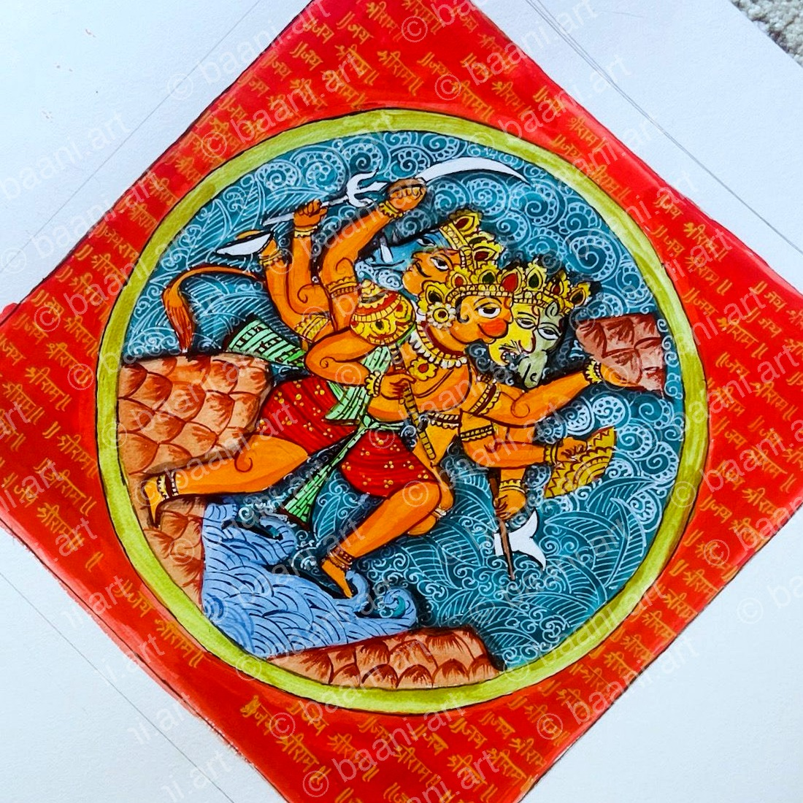
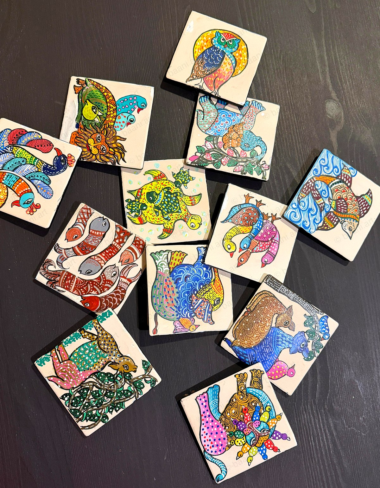
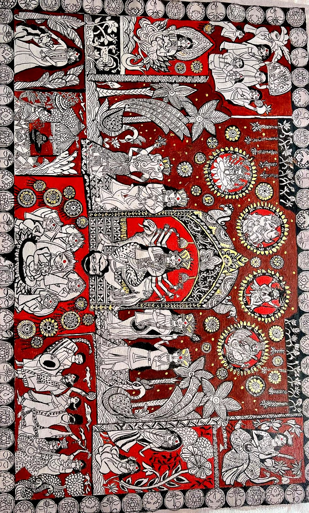
From the Studio
A glimpse behind every piece
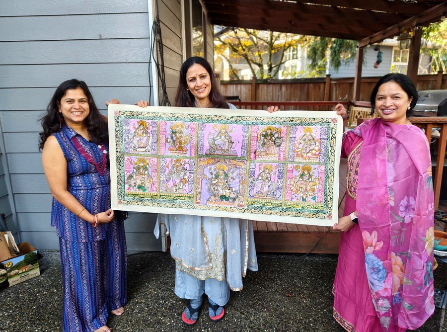